HƯỚNG DẪN CHỨC NĂNG SỔ QUYẾT TOÁN
Trong chức năng “Sổ quyết toán” bao gồm có ba phần tương ứng với ba loại hình doanh nghiệp đó là: Gia công, Sản xuất xuất khẩu và Chế xuất. Trong mỗi phần đều có các nghiệp vụ như đã giới thiệu ở trên.
Nếu trong phần thiết lập ngầm định ban đầu bạn có sử dụng cả hai chức năng “Kế toán kho” và “Sổ quyết toán” kèm theo lựa chọn “Tự động tạo chứng từ gộp” để khi tạo chứng từ bên “Kế toán kho” sẽ tự động tạo ra chứng từ tương tự bên “Sổ quyết toán” :
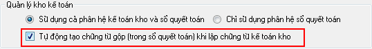
Thì :
- Bạn không phải thực hiện các bước tạo chứng từ tại Bước 2 trong phần hướng dẫn dưới đây.
- Chỉ cần cập nhật tồn đầu kỳ cho danh mục nguyên liệu vật tư theo quản lý hàng ECUS, sau đó thực hiện việc xem báo cáo (Hướng dẫn cụ thể tại Bước 1 và Bước 3 dưới đây).
Nếu trong phần thiết lập ngầm định ban đầu bạn chọn “Chỉ sử dụng Sổ quyết toán” :
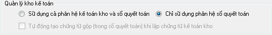
Thì :
- Bạn cần phải thực hiện đầy đủ các bước theo quy trình hướng dẫn dưới đây.
Để đi vào chi tiết từng nghiệp vụ tôi sẽ hướng dẫn chi tiết các nghiệp vụ cho loại hình Gia công, các loại hình khác đều thực hiện tương tự.
Khi bắt đầu thực hiện quản lý kho bảng chức năng Sổ quyết toán bạn cần thực hiện việc cập nhật số liệu tồn đầu kỳ, để thực hiện bạn vào menu “Sổ quyết toán/ Gia công” chọn “Cập nhật tồn đầy kỳ :
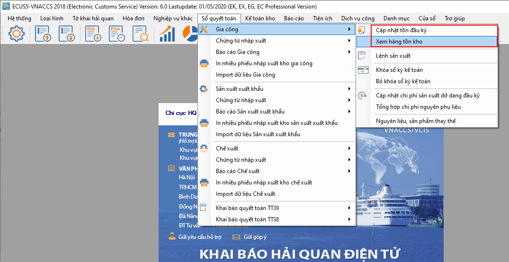
Chọn hợp đồng gia công để cập nhật số liệu tồn:
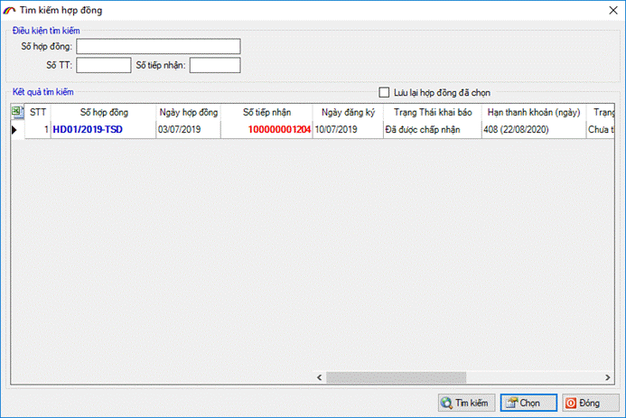
Màn hình cập nhật số liệu hiện ra như sau:
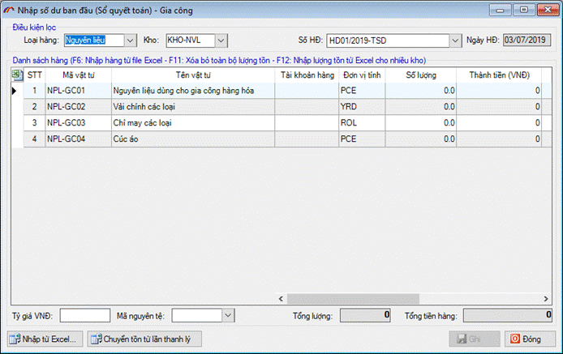
Bạn thực hiện cập nhật số liệu tồn Nguyên liệu, sản phẩm, thiết bị, hàng mẫu cho các kho.
Nếu doanh nghiệp đã chạy thanh lý thanh khoản và chốt số liệu xuất nhập tồn của lần thanh lý, thanh khoản thì có thể chuyển bảng số dư đầu kỳ bằng cách nhấn nút “Chuyển tồn từ lần thanh lý”.
Ngoài ra, bạn cũng có thể đưa số liệu vào từ file excel bằng cách nhấn phím F6 trên bàn phím, màn hình thiết lập hiện ra bạn thiết lập các thông số tương ứng như hình sau :
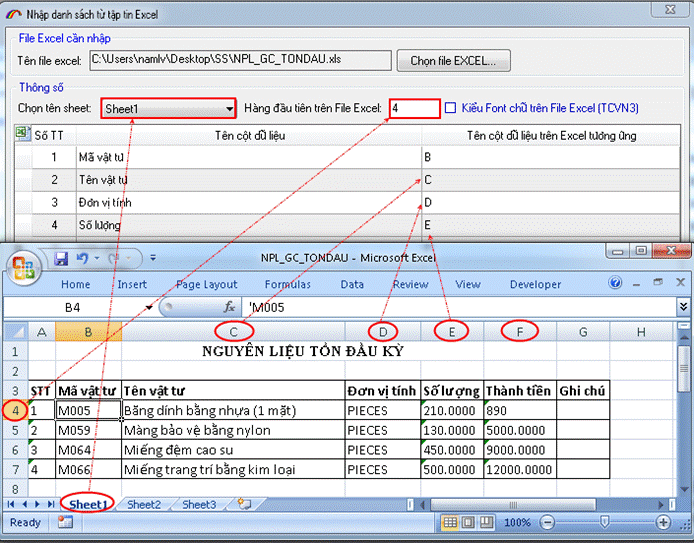
Để tạo phiếu nhập kho, bạn vào menu “Sổ quyết toán/ Chứng từ nhập xuất” và chọn mục “Phiếu nhập kho” màn hình hiện ra như sau :
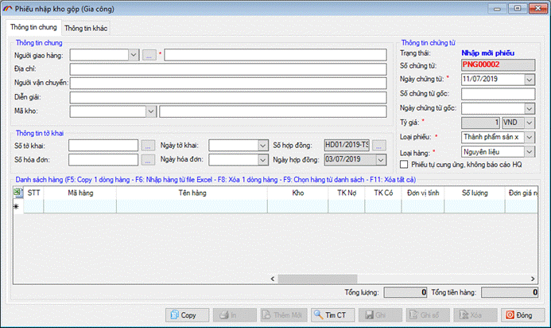
Nhập thông tin chung cho phiếu nhập kho :
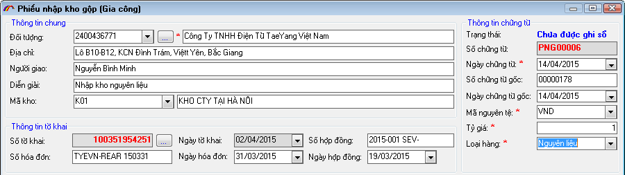
Nhập đối tượng : chọn đối tượng cho phiếu nhập kho từ danh sách, nhấn vào nút dấu (+) để thêm mới danh sách các đối tượng thường xuyên.
Địa chỉ : Nhập thông tin địa chỉ đối tượng, nếu khi bạn thêm danh sách đối tượng thường xuyên mà có nhập cả địa chỉ thì chọn đối tượng, phần mềm sẽ tự động lấy địa chỉ vào ô này.
Mã kho: Bạn chọn mã kho cần đưa hàng vào cho phiếu nhập kho, nếu chưa có danh sách mã kho bạn cần thêm mới từ menu “Danh mục / 23.Danh mục kho”.
Nhập các thông tin về chứng từ: như ngày chứng từ, số chứng từ gốc nếu có.
Mã nguyên tệ: Chọn mã nguyên tệ sử dụng cho phiếu nhập kho và thiết lập tỷ giá so với đồng tiền Việt Nam.
Loại hàng: để chọn loại hàng hóa cho phiếu nhập kho là Nguyên liệu, sản phẩm, thiết bị hay hàng mẫu.
Thông tin tờ khai: nếu có sẵn thông tin hàng từ tờ khai nhập khẩu Hải quan bạn nhấn vào nút có dấu (…) để chọn, khi đó phần mềm tự động lấy danh sách hàng vào phiếu nhập kho cho bạn.
Nhập danh sách hàng cho phiếu nhập kho:
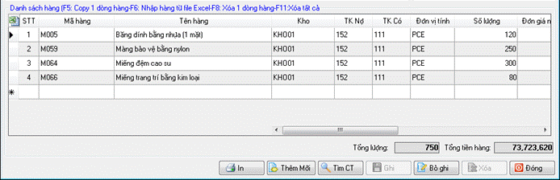
- Mã hàng: Mã hàng của phiếu nhập kho là mã hàng đăng ký danh mục ECUS.
- Tài khoản Nợ - Có: Chọn tài khoản Nợ - Có cho danh sách hàng của phiếu nhập kho nhằm mục đích báo cáo quyết toán với cơ quan Hải quan.
Phần mềm hỗ trợ chức năng nhập danh sách hàng từ file excel có sẵn dữ liệu, để nhập bạn nhấn phím F6 trên bàn phím để hiện ra cửa sổ thiết lập thông số import, khi đó bạn thiết lập hàng, cột tương ứng với file excel như hình mẫu dưới đây :
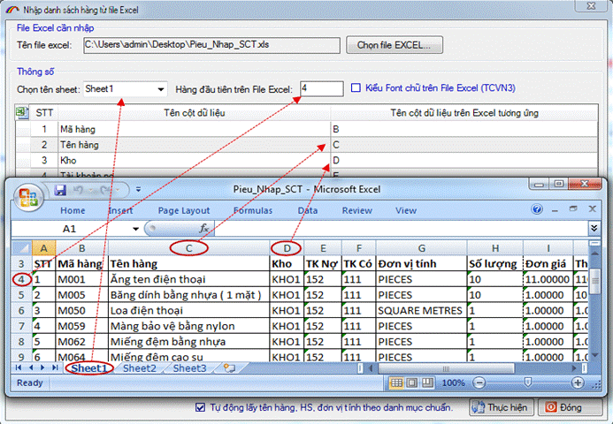
Bạn có thể lấy thông tin hàng từ tờ khai nhập khẩu Hải quan bằng cách nhấn vào nút có dấu (…) tại ô “Số tờ khai” để tìm và chọn tờ khai hoặc nhấn vào (…) tại ô “Số hóa đơn” để chọn danh sách hàng từ hóa đơn điện tử đã có ( Hóa đơn điện tử được khai báo bằng nghiệp vụ hóa đơn IVA trên phần mềm ECUS5VNACCS )
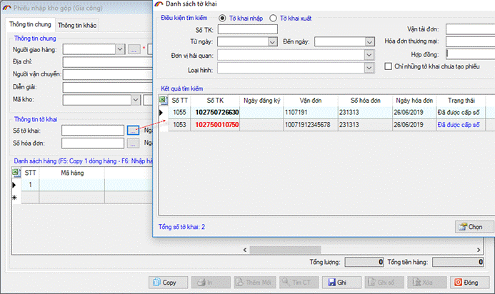
Sau khi tờ khai được chọn, phần mềm tự động lấy danh sách hàng trên tờ khai để đưa vào danh sách hàng của phiếu nhập kho:
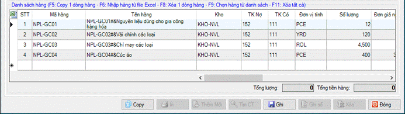
Bạn chỉ cần nhập vào thông tin Tài khoản Nợ - Có cho dòng hàng rồi ghi lại và nhấn vào “Ghi sổ” (nếu tại phần thiết lập thông số ngầm định ban đầu bạn chọn “Ghi dữ liệu đồng thời ghi sổ” thì sau khi nhấn Ghi dữ liệu phần mềm tự động ghi sổ cho bạn).
Lưu ý: để sửa thông tin phiếu nhập kho, bạn nhấn vào nút “Bỏ ghi” để trở về trạng thái sửa dữ liệu.
Để tạo phiếu xuất kho, bạn vào menu “Sổ quyết toán/ Chứng từ nhập xuất” và chọn mục “Phiếu xuất kho” màn hình hiện ra như sau :
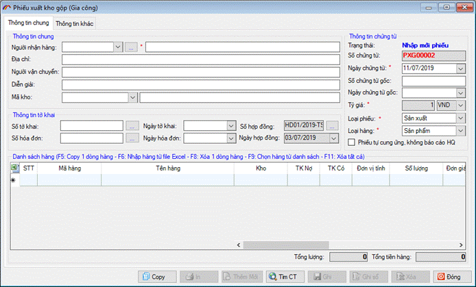
Nhập thông tin chung cho phiếu xuất kho :
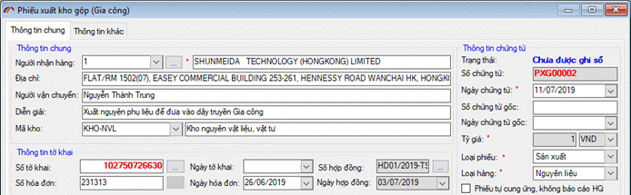
Người nhận hàng : Bạn chọn người nhận hàng cho phiếu xuất kho từ danh sách hoặc nhấn vào nút dấu … để thêm mới danh sách các đối tượng thường xuyên.
Địa chỉ : Nhập thông tin địa chỉ đối tượng, nếu khi bạn thêm danh sách đối tượng thường xuyên mà có nhập cả địa chỉ thì chọn đối tượng, phần mềm sẽ tự động lấy địa chỉ vào ô này.
Mã kho: Bạn chọn mã kho cần đưa hàng vào cho phiếu xuất kho, nếu chưa có danh sách mã kho bạn cần thêm mới từ menu “Danh mục / 23.Danh mục kho”.
Nhập các thông tin về chứng từ: như ngày chứng từ, số chứng từ gốc nếu có.
Mã nguyên tệ: Chọn mã nguyên tệ sử dụng cho phiếu xuất kho và thiết lập tỷ giá so với đồng tiền Việt Nam.
Loại hàng: để chọn loại hàng hóa cho phiếu xuất kho là Nguyên liệu, sản phẩm, thiết bị hay hàng mẫu.
Thông tin tờ khai: nếu có sẵn thông tin hàng từ tờ khai xuất nhập khẩu Hải quan bạn nhấn vào nút có dấu (…) để chọn, khi đó phần mềm tự động lấy danh sách hàng vào phiếu nhập kho cho bạn.
Nhập danh sách hàng cho phiếu xuất kho:
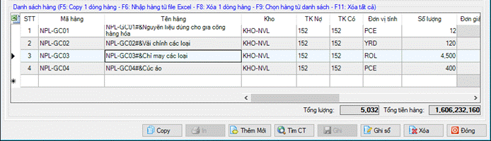
Trong danh sách hàng khi bạn chọn phần mềm sẽ thể hiện mã hàng theo danh mục Hải quan.
Phần mềm hỗ trợ chức năng nhập danh sách hàng từ file excel có sẵn dữ liệu, để nhập bạn nhấn phím F6 trên bàn phím để hiện ra cửa sổ thiết lập thông số import, khi đó bạn thiết lập hàng, cột tương ứng với file excel như hình mẫu dưới đây :
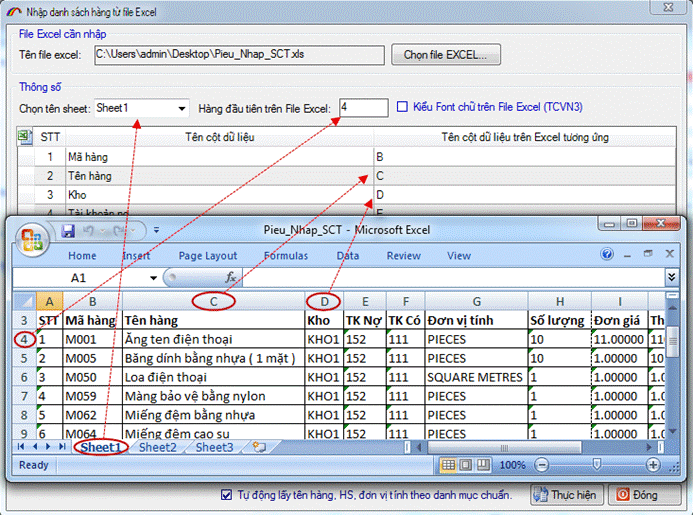
Bạn có thể lấy thông tin hàng từ tờ khai nhập khẩu Hải quan bằng cách nhấn vào nút có dấu (…) tại ô “Số tờ khai” để tìm và chọn tờ khai (ví dụ tôi xuất nguyên vật liệu ra khỏi kho, do đó tôi chọn tờ khai nhập có nguyên vật liệu này:
Sau khi tờ khai được chọn, phần mềm tự động lấy danh sách hàng trên tờ khai để đưa vào danh sách hàng của phiếu xuất kho:
Bạn chỉ cần nhập vào thông tin Tài khoản Nợ - Có cho dòng hàng rồi ghi lại và nhấn vào “Ghi sổ” (nếu tại phần thiết lập thông số ngầm định ban đầu bạn chọn “Ghi dữ liệu đồng thời ghi sổ” thì sau khi nhấn Ghi dữ liệu phần mềm tự động ghi sổ cho bạn).
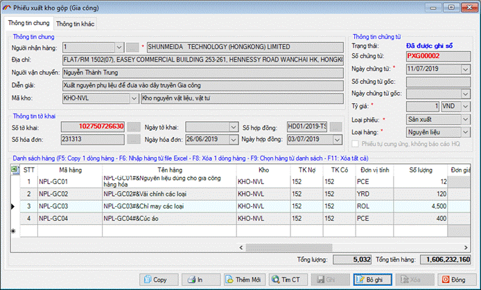
Lưu ý: để sửa thông tin phiếu nhập kho, bạn nhấn vào nút “Bỏ ghi” để trở về trạng thái sửa dữ liệu.
Phiêu chuyển kho được sử dụng để điều chuyển hàng giữa các kho với nhau, để thực hiện phiếu chuyển kho bạn vào menu “Sổ quyết toán / Chứng từ nhập xuất” và chọn mục “Phiếu chuyển kho” màn hình phiếu chuyển kho hiện ra như sau :
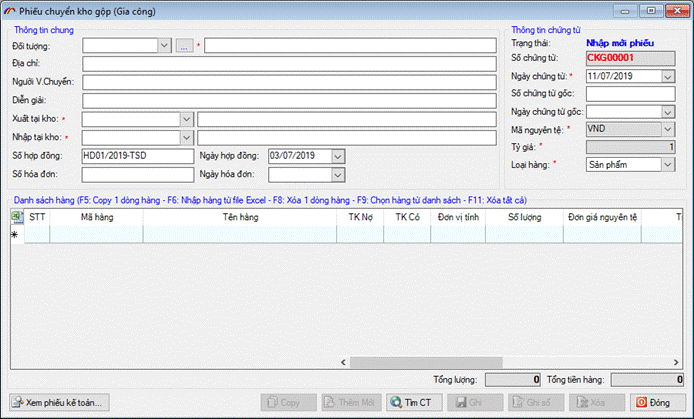
Nhập thông tin chung cho phiếu chuyển kho :
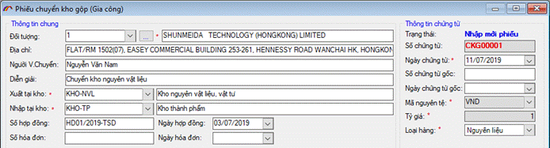
Nhập đối tượng : chọn đối tượng cho phiếu xuất kho từ danh sách, nhấn vào nút dấu (…) để thêm mới danh sách các đối tượng thường xuyên.
Địa chỉ : Nhập thông tin địa chỉ đối tượng, nếu khi bạn thêm danh sách đối tượng thường xuyên mà có nhập cả địa chỉ thì chọn đối tượng, phần mềm sẽ tự động lấy địa chỉ vào ô này.
Xuất tại kho: Bạn chọn mã kho cần đưa hàng ra để chuyển sang kho khác cho phiếu chuyển kho, nếu chưa có danh sách mã kho bạn cần thêm mới từ menu “Danh mục / 23.Danh mục kho”.
Nhập tại kho: Bạn chọn mã kho cần đưa hàng vào khi chuyển từ kho khác sang cho phiếu chuyển kho, nếu chưa có danh sách mã kho bạn cần thêm mới từ menu “Danh mục / 23.Danh mục kho”.
Nhập các thông tin về chứng từ: như ngày chứng từ, số chứng từ gốc nếu có.
Mã nguyên tệ: Chọn mã nguyên tệ sử dụng cho phiếu xuất kho và thiết lập tỷ giá so với đồng tiền Việt Nam.
Loại hàng: để chọn loại hàng hóa cho phiếu chuyển kho là Nguyên liệu, sản phẩm, thiết bị hay hàng mẫu.
Nhập danh sách hàng cho phiếu chuyển kho:
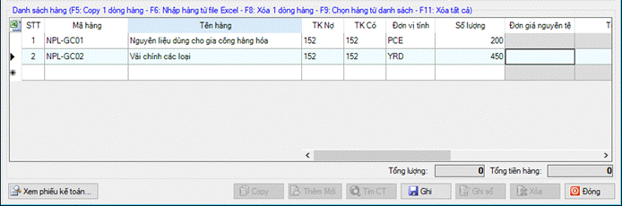
Phần mềm hỗ trợ chức năng nhập danh sách hàng từ file excel có sẵn dữ liệu, để nhập bạn nhấn phím F6 trên bàn phím để hiện ra cửa sổ thiết lập thông số import, khi đó bạn thiết lập hàng, cột tương ứng với file excel như hình mẫu dưới đây :
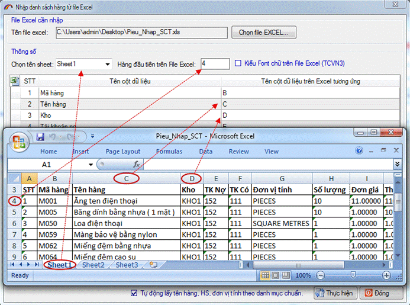
Bạn nhấn vào “Ghi sổ” (nếu tại phần thiết lập thông số ngầm định ban đầu bạn chọn “Ghi dữ liệu đồng thời ghi sổ” thì sau khi nhấn Ghi dữ liệu phần mềm tự động ghi sổ cho bạn).
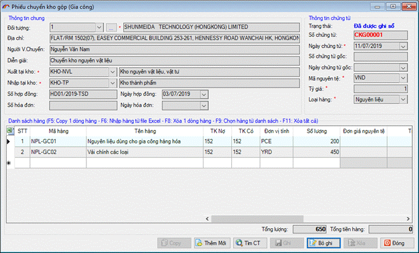
Lưu ý: để sửa thông tin phiếu nhập kho, bạn nhấn vào nút “Bỏ ghi” để trở về trạng thái sửa dữ liệu.
Hàng kỳ tháng hoặc quý doanh nghiệp thường có nhu cầu kiểm kê hàng hóa trong kho, việc kiểm kê có thể có nhiều mục đích khác nhau ngoài nhu cầu vê quản lý nhằm phát hiện những gian lận hay sai sót trong quản lý kho bãi, đôi khi nó cũng có tác dụng để tính giá thành hay xác định lượng hàng tiêu thụ trong kỳ.
Để thực hiện kiểm kê bạn vào menu “
Sổ quyết toán/Chứng từ nhập xuất” và chọn Phiếu kiểm kê, màn hình phiếu kiểm kê hiện ra như sau :
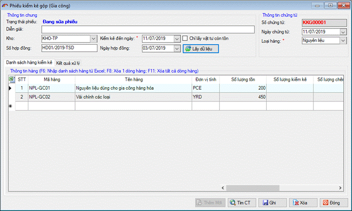
Các thông tin chung của phiếu kiểm kê:
Diễn giải : Nhập vào nội dung kiểm kê.
Kho : Chọn mã kho cần kiểm kê.
Số hợp đồng, ngày hợp đồng : Nhập vào số hợp đồng vào ngày hợp đồng nếu loại hình kiểm kê là Gia công.
Kiểm kê đến ngày : Bạn chọn khoảng thời gian kiểm kê.
Loại hàng: Chọn loại hàng cần kiểm kê là nguyên liệu, sản phẩm, thiết bị hay hàng mẫu.
Sau khi nhập xong các chỉ tiêu ở trên, bạn nhấn vào “Lấy dữ liệu”, nếu chỉ muốn hiện danh sách còn tồn bạn đánh dấu tích chọn vào mục “Chỉ lấy vật tư tồn” danh sách vật tư sẽ hiển thị trong tab “Danh sách hàng kiểm kê”:
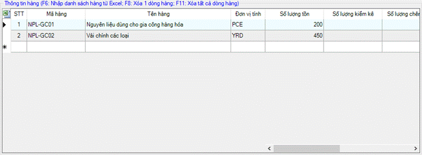
Bạn tiến hành nhập vào số lượng kiểm kê thực tế tại kho vào cột “Số lượng K.Kê” phần mềm sẽ tự động tính số lượng sai lệch, sau đó nhấn vào nút “Ghi” để ghi lại.
Nếu việc kiểm kê có sự chênh lệch phần mềm sẽ báo ở mục Trạng thái:
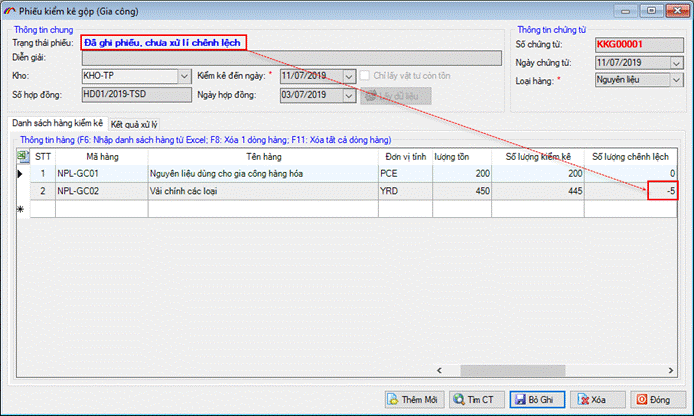
Bạn vào tab “Kết quả xử lý” và chọn “Tạo phiếu nhập” hoặc “Tạo phiếu xuất” để lập phiếu nhập / xuất bổ sung cần đối lại số lượng chênh lệnh:
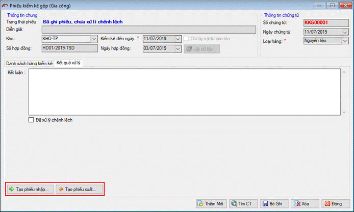
Khi tạo phiếu, phần mềm cũng tự động lấy số liệu chênh lệch để đưa vào danh sách hàng của phiếu cho bạn một cách tự động :
Theo nghiệp vụ kế toán, khi tạo phiếu xuất kho người dùng không phải nhập đơn giá xuất. Chỉ khi đến kỳ báo cáo, quyết toán sẽ thực hiện việc tính đơn giá xuất để cập nhật cho các phiếu xuất đã có trong kỳ quyết toán này.
Phần mềm hỗ trợ doanh nghiệp cách tính giá xuất theo phương pháp tính giá xuất bình quân theo kỳ. Bạn vào menu “Sổ quyết toán / Chứng từ nhập xuất” và chọn mục “Tính giá xuất kho”:
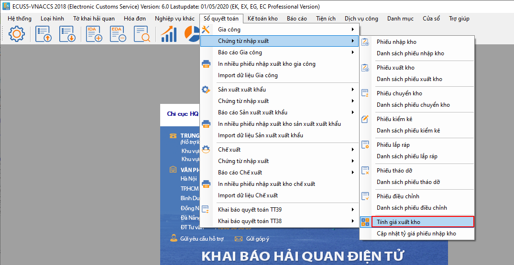
Màn hình tính giá xuất kho hiện ra như sau :
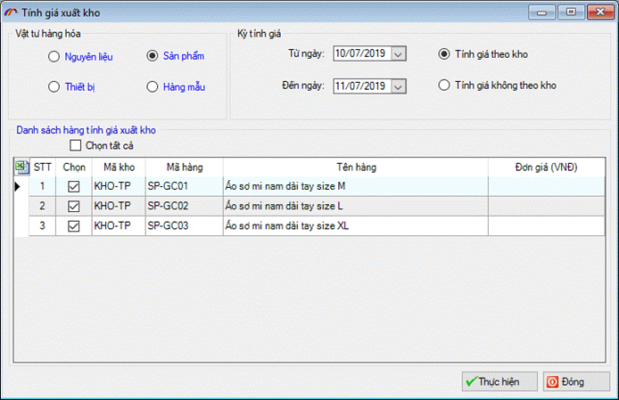
Tại đây bạn cần chọn loại vật tư, hàng hóa tính giá xuất, chọn kỳ tính thuế trong khoảng thời gian từ ngày đến ngày. Bạn cần lưa ý ngày bắt đầu của kỳ tính thuế phải là ngày lớn hơn ngày khóa sổ gần nhất nếu có. Ví dụ bạn đã khóa sổ vào ngày 30/06/2019 thì ngày bắt đầu tính giá xuất của kỳ kế tiếp có thể là 01/07/2019 trở về sau.
Có hai hình thức tính giá xuất đó là :
Tính giá theo kho: là chỉ tính giá xuất kho cho các mã hàng, vật tư có phiếu xuất, nhập theo từng kho phân biệt.
Tính giá không theo kho: là tính giá xuất kho chung cho các mã hàng hóa, vật tư có phiếu nhập, xuất kho không phân biệt theo kho.
Cuối cùng bạn nhấn vào nút “Thực hiện” sau khi tính giá xuất thành công phần mềm sẽ tự động cập nhật lại đơn giá xuất vừa tính vào các Phiếu xuất kho đã có trong khoảng thời gian kỳ tính giá mà bạn vừa chọn ở trên.
Khi cần xem báo cáo chi tiết Thẻ kho, báo cáo nhập xuất tồn, báo cáo quyết toán bạn vào menu “
Sổ quyết toán/ Báo cáo gia công” :
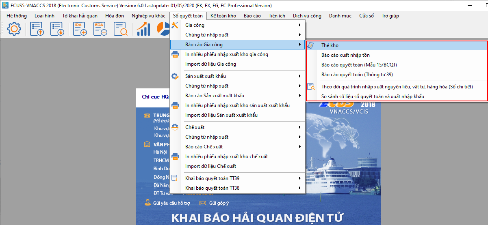
Để xem báo cáo thẻ kho chi tiết bạn chọn “
Thẻ kho” từ menu trên :
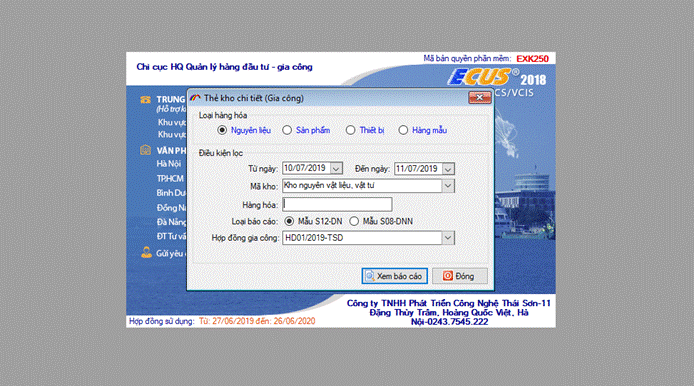
Bạn chọn các điều kiện lọc sau đó nhấn vào nút “Xem báo cáo” để phần mềm xuất ra báo cáo thẻ kho chi tiết, ví dụ:
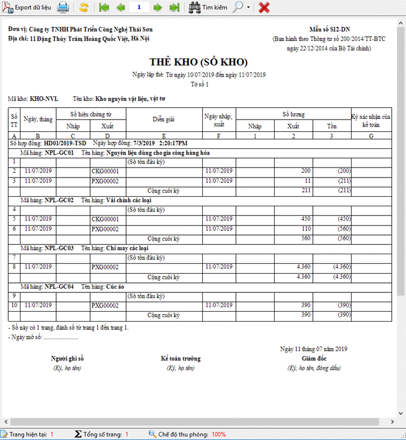
Để xem báo cáo thẻ kho chi tiết bạn chọn “
Báo cáo nhập xuất tồn” từ menu trên :
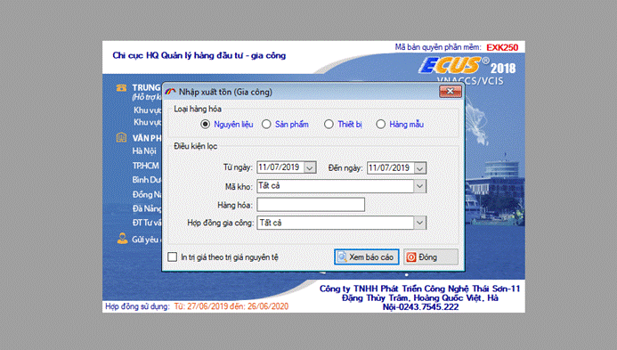
Bạn chọn các điều kiện lọc sau đó nhấn vào nút “Xem báo cáo” để phần mềm xuất ra báo cáo thẻ kho chi tiết, ví dụ:
Để xem báo cáo thẻ kho chi tiết bạn chọn “Báo cáo quyết toán” từ menu trên :
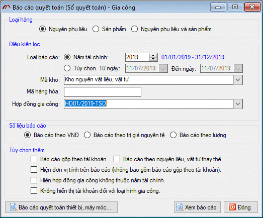
Bạn chọn các điều kiện lọc sau đó nhấn vào nút “Xem báo cáo” để phần mềm xuất ra báo cáo thẻ kho chi tiết, ví dụ:
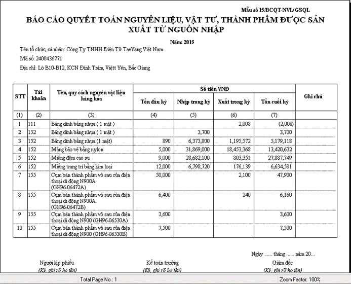
Khóa sổ kế toán:
Sau khi đã báo cáo tài chính, quyết toán cho tháng, quý, năm tài chính , bạn không còn bổ sung, sửa đổi các phát sinh trong khoảng thời gian tài chính này, khi đó bạn thực hiện khóa sổ kế toán, tất cả các phát sinh sẽ được thực hiện cho kỳ kế toán tiếp theo.
Bỏ khóa sổ kế toán:
Khi đã thực hiện việc khóa sổ kế toán mà cần sửa đổi bổ sung chứng từ trong khoảng thời gian đã khóa sổ, bạn tiến hành bỏ khóa sổ để quay về trạng thái sửa dữ liệu.
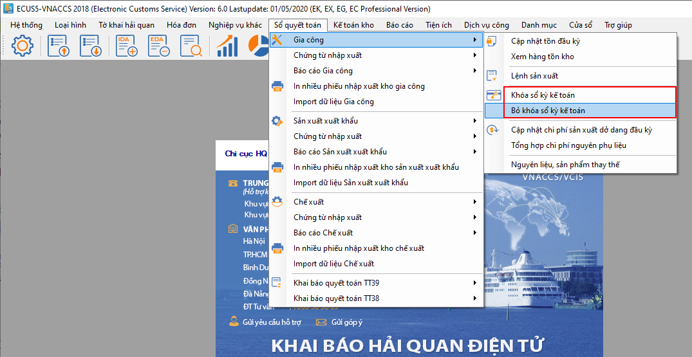
Để khóa sổ bạn vào menu “Sổ quyết toán / Gia công” và chọn mục “Khóa sổ kế toán” màn hình hiện ra như sau :
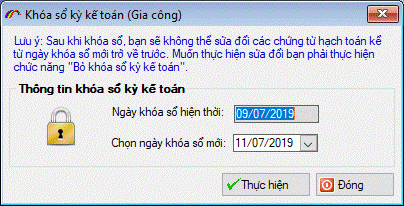
Nếu là lần khóa sổ đầu tiên phần mềm tự động lấy ngày khóa sổ hiện thời là ngày nhỏ nhất của các chứng đã có.
Bạn chọn ngày khóa sổ mới để xác định kỳ khóa sổ nằm trong khoảng thời gian từ ngày khóa sổ hiện thời đến ngày khóa sổ mới bạn vừa chọn.
Nhấn “Thực hiện” thành công sẽ có thông báo trả về như sau :
Bản quyền © thuộc về Công ty TNHH Phát triển công nghệ Thái Sơn